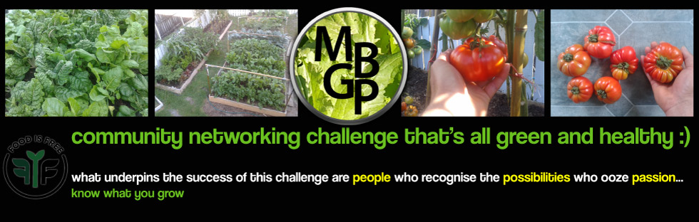
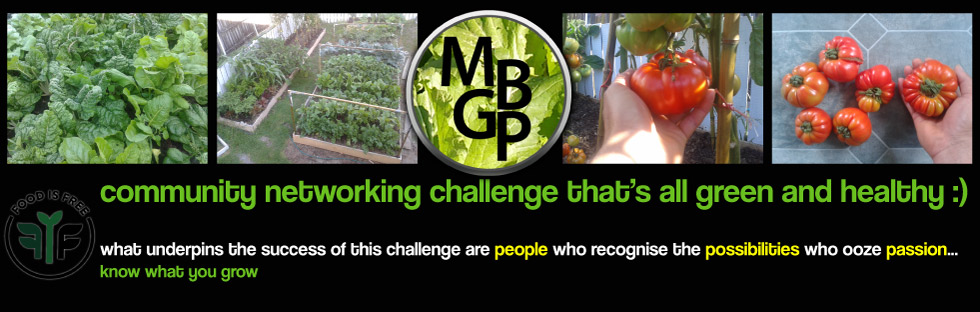

bUILDING VEGETABLE GARDENS TOGETHER...
- Bikes
- Hybrid
-
There was a time when Rohit Sharma and Shikhar Dhawan had mastered the template of opening in ODIs. They set up to bat long with a sedate start as platform, and kept accelerating. Since they started opening together in the Champions Trophy in 2013, 12 pairs have batted together long enough to be able to aggregate 1000 or more runs together. Only opening pairs from Ireland and Scotland have gone slower than Dhawan and Rohit.
There are reasons for it. Since 2015, India haven't had a great middle order, so the top three have had to prioritise the length of their partnerships over speed. Also they have had the bowlers to restrict the opposition, so they can argue they haven't needed to go quicker.
Both of those contributing factors are changing. Which brings us to the second, a much more incredible stat. Shiva Jayaraman is our in-house genius who can put numbers to approach and intent. He did some digging and found this: since ESPNcricinfo started maintaining ball-by-ball records, there have been over 4000 instances of a team losing three wickets in the space of 60 balls when batting first in ODIs; only once has a team responded with more sixes in the next five overs than the four that India hit in this match in Pune.
-
- Freight
- Huey
Kumar was not getting any younger. When a fast bowler gets into the fourth decade of his life, recurring and multiple injuries can be severely debilitating. Right from early 2018, he has been struggling with one injury after another. His workload was supposed to have been monitored during IPL 2018, but the Sunrisers Hyderabad say they didn't receive any such instructions. Pushed back too soon in the ODI series decider, he injured his lower back - not for the first time - and lost out on the Test series in England. In the World Cup next year, he did his left hamstring, followed by sports hernia, and then the thigh injury during last year's IPL.
There was trepidation around how good and how fit the returning Kumar would be. Even he was cautious in his expectations, just wanting some reassurance from his body that could only come from eight intense international matches without any serious discomfort or injury.
- Huey
- Hybrid
- Accordion functionality Yes/No
- Code trials
- Shadowbox text link to image
Project promo banner - click here Something is seriously wrong here. The "here" to be clicked is beneath the word Project. Shadowbox works but in the Developer Code it is now seeing it like this:

- Click image to open up multiple images with shadowbox
I got the >figure class="post-image"< in the code from the adaptive-design-demo > final.html
Ideally want to place in a div and centre etc.
What's noticable is how the -li- background is now compromised when I've placed shadowbox, youtube video and bullets on the page. We'e lost the light grey/blue backgroud. Now intermingled with white background where the additions now are. How can we fix this. I like the backgrounds OR we try and put a border around the accordion and then background can be white and it won't matter.
- Let's try a Youtube video...
YouTube
How do you put a video in this div and then format so that it's in the centre? - Bullets anyone?
This accordion has some interesting bugs in it. The reason I say this is I've found with bullets for example it's hit and miss if they show on the page. If I refresh the page they might appear again. Not a stable accordion.
- disc
Fusce ut sem est. In eu sagittis felis. In gravida arcu ut neque ornare vitae rutrum turpis vehicula. Nunc ultrices sem mollis metus rutrum non malesuada metus fermentum. Vestibulum ante ipsum primis in faucibus orci luctus et ultrices posuere
- circle
Fusce ut sem est. In eu sagittis felis. In gravida arcu ut neque ornare vitae rutrum turpis vehicula. Nunc ultrices sem mollis metus rutrum non malesuada metus fermentum. Vestibulum ante ipsum primis in faucibus orci luctus et ultrices posuere
- square
Fusce ut sem est. In eu sagittis felis. In gravida arcu ut neque ornare vitae rutrum turpis vehicula. Nunc ultrices sem mollis metus rutrum non malesuada metus fermentum. Vestibulum ante ipsum primis in faucibus orci luctus et ultrices posuere
- decimal
Fusce ut sem est. In eu sagittis felis. In gravida arcu ut neque ornare vitae rutrum turpis vehicula. Nunc ultrices sem mollis metus rutrum non malesuada metus fermentum. Vestibulum ante ipsum primis in faucibus orci luctus et ultrices posuere
- lower-roman
Fusce ut sem est. In eu sagittis felis. In gravida arcu ut neque ornare vitae rutrum turpis vehicula. Nunc ultrices sem mollis metus rutrum non malesuada metus fermentum. Vestibulum ante ipsum primis in faucibus orci luctus et ultrices posuere
- lower-alpha
- Right align and left align images
I want to be able to put an image in here... right align. It's called tazi.png and it's in the images folder.
- Shadowbox text link to image
- Family
- SUV
- Code trials
- Airplanes (inactive)
{kind=link}
{kind=link}
{kind=link}
{kind=link}